On this page, we will discuss the fundamental differences between nuclear fission and nuclear fusion. We will also provide a brief overview of the current global circumstances surrounding nuclear fusion research.
2-1. Nuclear Power Generation via Nuclear Fission
Currently operating conventional nuclear power plants utilize the nuclear fission reaction of Uranium-235 (an isotope of uranium with a mass number of 235, 92 protons, and 143 neutrons) described by the following chemical equation:
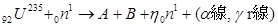
(2-1)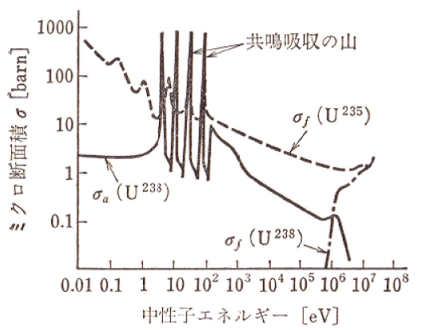
In the equation above, the subscript to the bottom-left of the element symbol represents the atomic number (number of protons), and the superscript to the top-left represents the mass number. Thus, 92U235 represents Uranium with 92 protons and a mass number of 235, while 0n1 represents a neutron. In natural uranium, the isotopes U234, U235, and U238 exist in a ratio of approximately 0.0054 : 0.071 : 99.28, respectively.
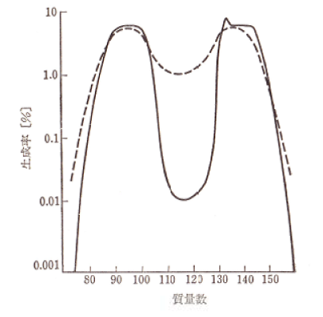
Neutrons are classified by their kinetic energy levels into thermal neutrons, which possess very low energy (~0.025 eV) in thermal equilibrium with the surrounding medium, low-speed neutrons (~103 eV), intermediate neutrons (103 to 5×105 eV), and fast neutrons (above 5×105 eV). What is crucial for nuclear fission is that the reaction shown in Equation (2-1) occurs effectively even with low-energy thermal neutrons. As indicated by the dotted line in Figure 2-1, the cross-section (reaction probability) for inducing fission in U235 increases significantly as the neutron energy decreases. Consequently, U235 is selected for fission reactors; however, as mentioned earlier, its natural abundance is extremely small, making it necessary to enrich it from mined uranium ore.
The products A and B in Equation (2-1) represent a wide variety of substances generated by the fission reaction, typically spanning mass numbers from approximately 70 to 160 (see Figure 2-2). As seen in Figure 2-2, a uranium nucleus rarely splits into two perfectly equal halves; instead, the fission fragment yield curve has an interesting characteristic with two distinct peaks corresponding to lighter and heavier mass nuclei. Therefore, the actual microscopic equations for a nuclear reactor are exceedingly complex. In Equation (2-1), η represents the neutron multiplication factor—the number of new neutrons produced per incident neutron—which is approximately 2.47 for U235. The symbol α denotes an alpha particle (helium nucleus), and γ denotes gamma radiation (electromagnetic waves). The energy generated by a single thermal neutron colliding with a U235 nucleus—the right-hand side of Equation (2-1)—amounts to a massive 202×106 eV. Remarkably, an initial thermal neutron energy of just 0.025 eV triggers the release of an immense 202×106 eV of energy. This energy stems from the mass defect between the right and left sides of Equation (2-1); the mass lost during the fission reaction is converted into thermal energy in strict accordance with Einstein's mass-energy equivalence equation, $E=mc^2$ (where $E$ is energy, $m$ is mass, and $c$ is the speed of light). This thermal energy is then harnessed to generate electricity.
Figure 2-3 shows a conceptual diagram of a nuclear fission reactor. The reaction described in Equation (2-1) is sustained through a chain reaction as illustrated in Figure 2-4. Although the neutron multiplication factor of 2.47 is quite large, it is strictly moderated using a neutron-reducing moderator and neutron-absorbing control rods as shown in Figure 2-3, maintaining a controllable neutron multiplication rate of approximately 1.04 times per second. Heat exchange is performed via a coolant, and just like a conventional thermal power plant, this heat turns a steam turbine to generate electricity. The majority of nuclear power plants currently operating in Japan are "light-water reactors," which utilize standard fresh water (H2O) as both the moderator and the coolant. There are several other types of reactors, such as heavy-water reactors that utilize deuterium oxide (D2O).
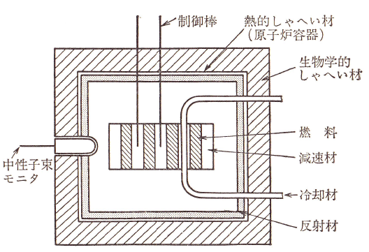
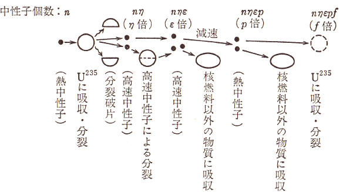
2-2. Nuclear Power Generation via Nuclear Fusion
Before diving into nuclear fusion, let us discuss atomic binding energy. As is widely known, an atomic nucleus consists of protons and neutrons, collectively referred to as "nucleons." Atoms that share the same number of protons but have a different number of neutrons are called isotopes. For heavier elements with large atomic numbers, isotopes exhibit very similar chemical properties. However, for light elements like hydrogen, the chemical properties can differ significantly because the mass ratio varies drastically between isotopes. Furthermore, even for heavy elements, the nuclear reaction cross-sections can vary enormously depending on the isotope, as shown in Figure 2-1. Recent plasma confinement research has also pointed out that confinement characteristics differ depending on the hydrogen isotope (H: light hydrogen, D: deuterium, T: tritium), making isotope effects a vital and cutting-edge topic in modern confinement studies.
Figure 2-5 shows the mass per nucleon—the total atomic mass divided by its mass number (protons + neutrons)—plotted against the mass number for various elements. As illustrated in Figure 2-5, Iron (Fe), located around a mass number of 60, possesses the smallest mass per nucleon. Since mass can be directly converted into energy via Einstein's equation, iron can be considered the most stable element in the universe. Therefore, regarding nuclear reactions between different atoms, heavy elements with mass numbers greater than 60 decrease their total mass via nuclear fission ($X \rightarrow K1 + K2$), whereas light elements with mass numbers smaller than 60 decrease their total mass via nuclear fusion reactions ($Ia + Ib \rightarrow q$). In both regimes, this lost mass is released as a tremendous amount of energy.
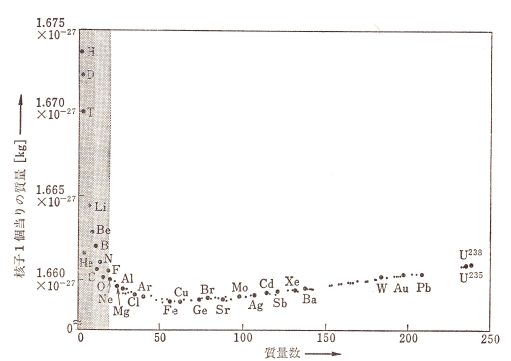
Nuclear fission and nuclear fusion are universal processes that can theoretically occur in any atom, using a mass number of 60 as the boundary. For example, setting aside practical energy production, one can artificially induce nuclear fission by bombarding atoms with neutrons using accelerators, or induce nuclear fusion by ionizing and accelerating atoms into collisions. However, for a process to be viable as a commercial energy source, it must satisfy two core criteria: first, the energy output must far exceed the energy input, and second, the fuel must be abundantly available. Nuclear fission utilizing U235 succeeded as an energy source because it satisfied both demands. For nuclear fusion, the following four reactions are considered prime candidates that could fulfill these criteria:
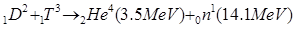
(2-2)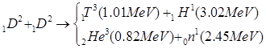
(2-3)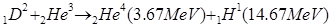
(2-4)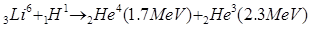
(2-5)In these equations, 1H1, 1D2, and 1T3 represent the isotopes of hydrogen: light hydrogen (no neutrons), deuterium (one neutron), and tritium (two neutrons), respectively. 2He4 and 2He3 are isotopes of helium, but almost all helium naturally existing on Earth is 2He4, which is currently extracted as a byproduct from natural gas fields in the US, Africa, and Russia.
Figure 2-6 shows the reaction cross-sections for these respective fusion reactions. As illustrated, the D-T fusion reaction described by Equation (2-2) can be triggered at the lowest kinetic energy level among all candidates.
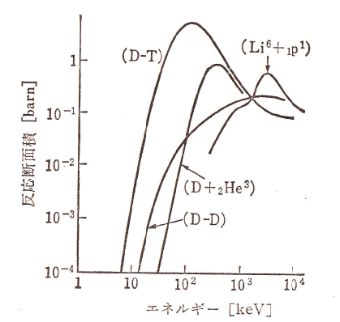
Therefore, mainstream global research is currently targeting the D-T reaction to realize practical fusion energy. However, if we compare the U235 fission cross-section in Figure 2-1 with the D-T fusion cross-section in Figure 2-6, we notice that the energy required to trigger the reactions differs by orders of magnitude. As explained in Section 2-1, the fission of U235 can be induced by neutrons at room temperature, whereas the D-T fusion reaction requires heating the deuterium and tritium fuel to an extraordinarily high temperature of 10 keV (~100 million degrees Celsius!!). Furthermore, the peak reaction cross-section for fission is significantly larger than that for fusion. This represents the core scientific difficulty of fusion power generation: we must first heat the deuterium and tritium to the immense energies required for fusion, and subsequently confine them securely within a reactor vessel.
In terms of fuel resources, since deuterium is an isotope of hydrogen, it exists abundantly in water. Although its natural abundance ratio is very small (0.015%), the total volume of water on Earth is so vast that we will never face a shortage of deuterium resources. Tritium, however, does not exist naturally on Earth in any meaningful quantity because it is radioactive with a short half-life. Therefore, it must be artificially bred using the following nuclear reactions involving lithium (Li):
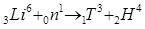
(2-7)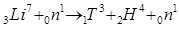
(2-8)To initiate a fusion reaction, the deuterium and tritium fuel must be fully ionized into a plasma state consisting of free electrons and ions, and then raised to extreme temperatures using high-power electromagnetic waves or high-energy particle beams. Because ions and electrons carry electrical charges, they naturally spiral around magnetic field lines; we leverage this physical property to securely confine the high-energy plasma inside a magnetic trap. While external heating systems are required to initiate the process, once a sufficient number of fusion reactions occur, the high-energy 2He4 alpha particles produced by Equation (2-2) automatically provide self-heating to the plasma, eventually eliminating the need for external heating.
Currently, the two leading configurations for confining high-temperature plasma using magnetic fields are the Tokamak device and the Helical device shown in Figure 2-7. Both configurations shape the plasma into a closed doughnut loop, which eliminates open ends and prevents particles from easily escaping. These magnetic fields are generated using powerful electromagnets. The LHD used in our laboratory and future commercial reactors implement superconducting magnets, which generate immense magnetic fields with zero electrical resistance and zero current losses. The structural difference between the plasma shapes of a tokamak and a helical system can be visualized using standard doughy doughnuts as illustrated in Figure 2-8; the helical configuration possesses a noticeably more complex, twisted geometry. The detailed mechanisms of these magnetic confinement methods will be discussed further in the "Large Helical Device" section.
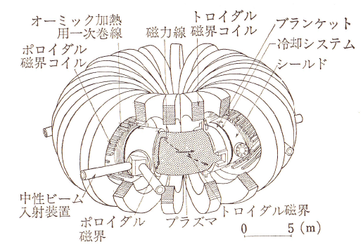
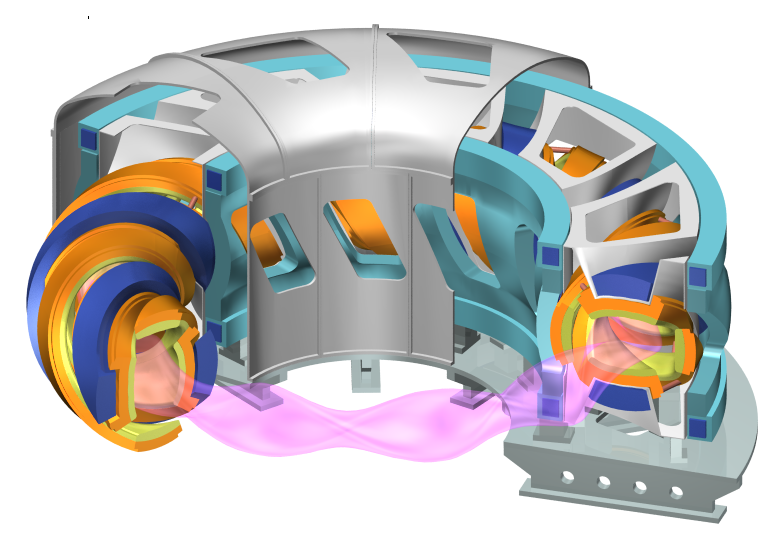
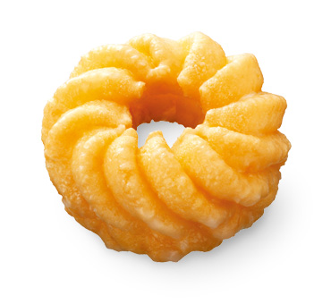
Figure 2-9 shows a conceptual diagram of a future commercial nuclear fusion power plant. Whether a reactor utilizes a tokamak or a helical configuration, the core chamber will take a toroidal doughnut shape. Figure 2-9 represents a cross-sectional view of this doughnut. In a nuclear fission reactor, the solid fuel is loaded directly into the core as shown in Figure 2-4. In a fusion reactor, however, the inner wall of the vacuum vessel surrounding the high-temperature plasma is lined with a "blanket" containing flowing liquid lithium (imagine it as a protective blanket wrapping around the plasma). The high-energy neutrons generated by the D-T reaction in Equation (2-2) escape the magnetic field because they carry no electrical charge, enter the blanket, and react with the lithium via Equations (2-7) and (2-8) to automatically breed new tritium fuel. To initiate the very first operation of a fusion reactor, tritium must be supplied from external sources, which can be bred beforehand by utilizing neutrons from conventional fission reactors.
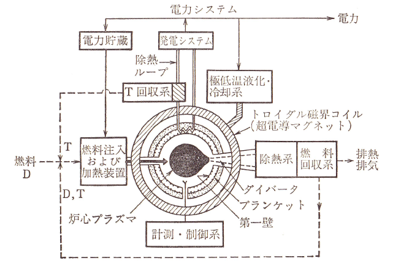
Although engineering a nuclear fusion reaction is far more difficult than nuclear fission, fusion offers an immense advantage in terms of inherent safety. In fact, the very scientific difficulty of achieving fusion acts as a guarantee of its safety. In nuclear fission, the neutron multiplication factor shown in Equation (2-1) is extremely high, meaning the reaction must be carefully held back and moderated using control rods to prevent a runaway chain reaction. In a nuclear fusion reactor, however, if a critical accident causes a sudden and complete loss of electrical power, the magnetic confinement field vanishes instantly. Without the magnetic trap, the high-temperature plasma immediately hits the chamber walls, cools down, neutralizes, and vanishes within a fraction of a second. Therefore, even in a severe blackout or power loss scenario, the fusion reaction terminates automatically, making a fusion reactor fundamentally and overwhelmingly safer than a conventional fission plant.
Nevertheless, we must remain aware that tritium (also called radioactive hydrogen) utilized in the D-T reaction is a radioactive isotope that undergoes beta decay (with a half-life of 12.3 years). If tritium enters the human body, it can cause internal radiation exposure, meaning a D-T fusion reactor requires a rigorous safety management system to strictly prevent tritium from escaping into the environment. While a fission reactor generates a vast array of radioactive products as shown in Figure 2-2, the only radioactive isotope directly involved as fuel in a D-T fusion reactor is tritium; even so, it demands strict handling protocols.
Until the Fukushima Daiichi accident, safety research for fusion reactors focused primarily on the strict handling of tritium. However, following the Fukushima disaster, intense discussions have also focused on whether a fusion reactor remains truly safe under a complete station blackout (total loss of power). While the only radioactive material handled as fuel is tritium, the high-energy neutrons produced by the fusion reaction carry no charge and cannot be trapped by the magnetic field. They pass through the plasma to breed tritium via Equations (2-7) and (2-8) and transfer their kinetic energy into the coolant to generate electricity. Simultaneously, these neutrons bombard the surrounding structural materials of the reactor (such as the vacuum vessel chamber), causing "neutron activation" of the metals over time. For instance, if the cooling systems fail completely, these activated structural materials will continue to release decay heat. Computational simulations indicate that this decay heat could raise the temperature of the structure to around 800°C. Since the melting point of standard stainless steel used in vacuum chambers is approximately 1400°C, the reactor structure would remain safely intact according to these models. Nonetheless, more detailed analyses and the development of advanced "low-activation materials" that resist radioactivation are critical research fields.
Table 2-1 compares the historical timelines of nuclear fission and nuclear fusion. Despite the fact that the fundamental physical discoveries of fission and fusion occurred around the same era, their subsequent histories have followed completely different paths.
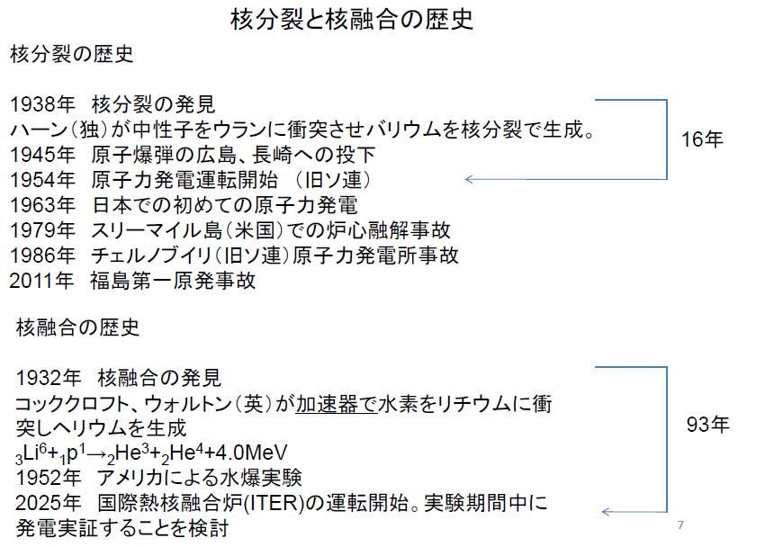
2-3. Nuclear Fusion and Other Energy Sources
Although nuclear fusion boasts a significantly higher level of safety compared to nuclear fission, it has not yet succeeded in commercial electricity generation. Current projections estimate that demonstrating net electrical power output will take just under 20 years, and commercial power distribution into the grid will take 30 to 40 years. Critics often point out the "mirage argument" (or the "receding water" argument) regarding fusion research. A mirage occurs on a hot, sunny day when you drive on an asphalt road and see what looks like a pool of water far ahead, but as you approach, it vanishes and reappears further down the road. Fusion critics argue that fusion scientists have claimed "fusion is 20 years away" for decades, and as 20 years pass, they continue to claim it will take another 20 years, mimicking a mirage. Hearing that it will take another 20 years to demonstrate power output might make you feel that we are trapped in another mirage. However, the next 20 years are fundamentally different from the past 20 years. This is because the construction of the International Thermonuclear Experimental Reactor (ITER), which is designed to achieve net fusion power amplification, is already well underway and entering its experimental phase. Actual D-T fusion experiments are formally scheduled, and extracting net thermal and electrical power output is being actively evaluated.
Simultaneously, alternative energy sources are being actively researched and deployed to replace conventional fossil fuels and fission power, including solar, wind, tidal, wave, and geothermal power. These renewable energy sources are drawing intense global attention because they are virtually inexhaustible and do not cause severe environmental pollution. Their greatest appeal lies in the complete absence of catastrophic risks like nuclear meltdowns. Crucially, all of these renewable methods are already actively supplying electricity to the grid today. We must candidly acknowledge that renewables stand a step ahead of nuclear fusion in this regard. However, a major bottleneck of these natural renewable energy sources is their relatively low energy density and generation efficiency per unit area. Furthermore, their power output is heavily dependent on weather conditions and environmental fluctuations. Because an electrical grid demands an exceptionally stable and continuous supply of electricity, some grid simulations indicate that unbuffered renewable sources must be limited to below 40% of the total generation capacity to avoid grid instability.
Furthermore, regarding fossil fuels, novel resources are drawing attention beyond conventional crude oil and natural gas, such as oil shale extracted from deep rock layers and methane hydrate, which is rumored to exist abundantly along the deep ocean floors surrounding the Japanese coast.
For those interested in quantitative and data-driven evaluations of future energy projections, Reference [3] provides an excellent analysis focusing on the UK. Additionally, Dr. Katsunori Muraoka, Professor Emeritus of Kyushu University and the translator of Reference [3], conducted a similar comprehensive analysis targeting Japan, detailed in Reference [4].
Beyond developing new energy sources, we must also utilize energy more efficiently by implementing smart grid architectures to optimize power distribution and introducing superconducting transmission lines to eliminate resistance losses. In the mid-1970s, when prominent experts debated the future of fusion, some argued that aggressive energy conservation and boosting efficiency were far more effective solutions to the energy crisis than developing entirely new power sources.
Ultimately, the consensus today is that no single energy method is sufficient on its own. We must continue developing each technology while clearly evaluating its respective limitations and technical boundaries. Nuclear fusion represents one powerful solution to the global energy crisis, but it is not necessarily the sole solution. Nevertheless, fusion stands on 50 years of steady, rigorous scientific achievements. It is vital that we continue driving this research forward to establish fusion as a definitive pillar of our future energy infrastructure.
References
- M. Akazaki and M. Hara, "Electrical Energy Engineering", Asakura Shoten.
- M. Akazaki, K. Muraoka, Y. Watanabe, and K. Ebihara, "Foundations of Plasma Engineering", Sangyo Tosho.
- David J.C. MacKay (Translated by K. Muraoka), "Sustainable Energy - Without the Hot Air", Sangyo Tosho.
- K. Muraoka, "The Future of Our Energy", Sangyo Tosho.